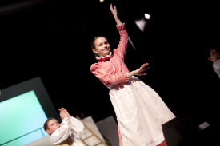

Už nepoznám len prímu (Katka Petrovičová)
Jednou z najmladších medzi hercami bola Katka Petrovičová, predstaviteľka malej Beatriz, ktorá úspešne kráča v hereckých šľapajách svojich starších bratov.
V jednej z našich scén v hre sa máme naháňať. Raz sa nám podarilo zhodiť jednu z dlhých drevených palíc, ktoré boli opreté o dom. To by ešte nebolo nič, ale spolužiak sa začal smiať tak, že nevedel začať hovoriť svoju repliku. Keď sme tú scénu dohrali, v zakulisí sme sa na tom ešte dlho smiali.
Chcela by si hrať v profesionálnom divadle?
Možno by som si zahrala, ale asi by som nechcela byť herečka. Ešte mám čas rozhodnúť sa...
Máš herectvo v rodine?
Áno. V hre Alžbeta Uhorská hrali obaja moji bratia. Myslím, že sa im hralo super, veď hrať kráľa a princa nie je práve najhoršie. A skúsili si to aj v hre Pilátova žena. Starší brat si zahral Pilátovho doktora.
Čo ti dala hra o Juanovi?
Nemusela som byť v škole... Ale nie. Najviac to, že teraz poznám nielen prímu.
Ktorá scéna z hry sa ti najviac páči?
Mám rada scénu na lúke, keď sa Pedro snaží zistiť, čo také úžasné sa stalo Juanovi.
Stíhaš sa popri predstaveniach aj učiť do školy a chodiť na krúžky?
Áno, dá sa to v pohode zvládnuť.
Ako vnímaš nového triedneho profesora?
Páči sa mi na ňom, že si dokáže zo všetkého spraviť „srandu“. Ale keď príde na počítanie matematiky, zábava končí (smiech).